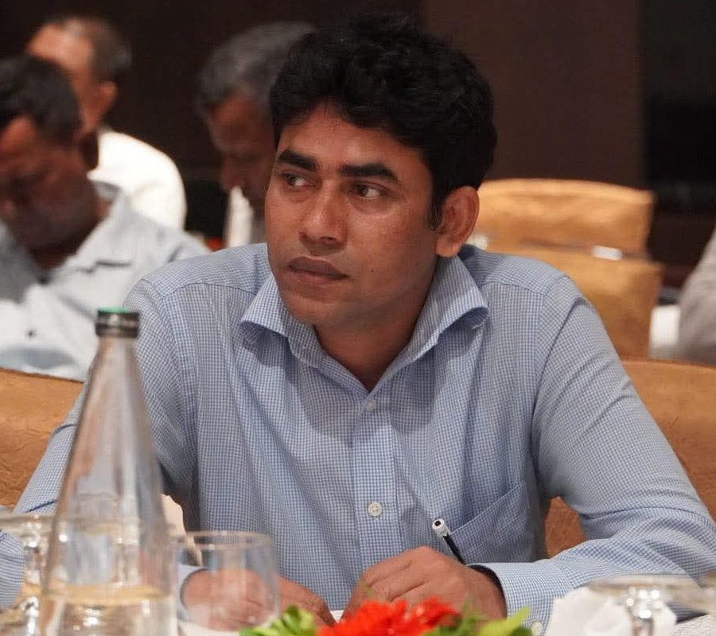

🐔
Poultry Breeding & Genetics
Conservation and genetic improvement of indigenous and hilly chickens and meat-type quail; candidate-gene polymorphisms (HSP70, HSF3) associated with egg production.
Livestock & Poultry Scientist · Bangladesh
Senior Scientific Officer & Project Director
Bangladesh Livestock Research Institute (BLRI)
Advancing sustainable poultry and livestock production through applied research in animal nutrition, genetics, reproduction and farmer-level technology transfer.

About
Dr. Md. Yousuf Ali is a Senior Scientific Officer at the Bangladesh Livestock Research Institute (BLRI), the national research organisation for livestock and poultry under the Ministry of Fisheries and Livestock, Government of the People's Republic of Bangladesh. He joined BLRI in 2012 in the Poultry Production Research Division and has since worked across poultry, dairy, small-ruminant and fodder research programmes, including several years at the BLRI Regional Station, Baghabari, Sirajganj, in the heart of the country's milk-shed area.
He earned his Ph.D. in Biological Production Science from the Tokyo University of Agriculture and Technology (TUAT), Japan, in 2020. His research combines animal nutrition, quantitative and molecular genetics, reproductive physiology and animal health to develop practical technologies for smallholder farmers.
He has authored more than fifty peer-reviewed articles in national and international journals, including Animals (MDPI) and the Journal of Advanced Veterinary and Animal Research, and contributed to the development of the BLRI Mastitis Test Kit and the dissemination of BLRI-developed Napier fodder cultivars. He currently serves as Project Director of a BLRI development/research project.
Current Leadership
Bangladesh Livestock Research Institute · Funded by [Ministry / Donor] · [Start year] – [End year]
A short summary of the project's aims will go here: the problem it addresses, target beneficiaries and districts, and expected outputs for the livestock sector of Bangladesh.
Research
Conservation and genetic improvement of indigenous and hilly chickens and meat-type quail; candidate-gene polymorphisms (HSP70, HSF3) associated with egg production.
Dietary phosphorus and feeding regimens for laying hens, linseed-enriched eggs, alternative feed ingredients for broilers, ducks, quail, goats and sheep.
Repeat breeding, hormonal profiles and ovarian physiology of dairy cows; subclinical mastitis detection and the BLRI Mastitis Test Kit; parasitic disease surveillance.
Agronomy, biomass yield and nutritive value of BLRI Napier cultivars, sugar beet and intercropping in bathan grazing areas; farmer-level adoption.
Heavy-metal residues in feed, meat and eggs; egg quality under storage; nutrient composition of meats and milk of local Pabna cattle.
Farm surveys of broiler, turkey and cattle production systems, bio-security in live-bird markets, and technology transfer to rural farmers.
Career
Bangladesh Livestock Research Institute, Savar, Dhaka
Bangladesh Livestock Research Institute (BLRI)
Tokyo University of Agriculture and Technology, Japan
Poultry Production Research Division, BLRI · later at BLRI Regional Station, Baghabari, Sirajganj
[University], Bangladesh
Publications
Synced from ORCID. For citation metrics see Google Scholar.
Contact